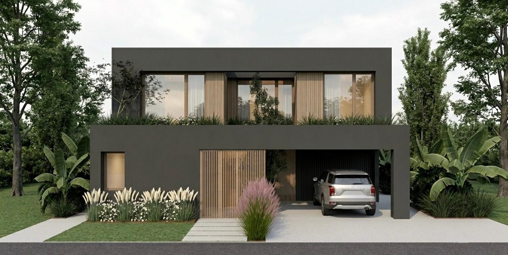

Diseño que viaja y se planta.
Buenos Aires, Barcelona y la Patagonia argentina conviven en cada proyecto del estudio.



Diseño con personalidad, a tu medida.


Diseño espacios que se atreven a tener personalidad propia.
Nací y crecí en Buenos Aires, donde di mis primeros pasos en el diseño de interiores. Más adelante sumé experiencia profesional en Barcelona, una etapa que despertó en mí una fascinación duradera por lo mediterráneo: su luz, su paleta y su textura. Hoy dirijo mi estudio desde Neuquén capital, en plena Patagonia argentina, y trabajo en proyectos a lo largo de todo el país.
Esa trayectoria define mi enfoque: cada espacio combina esa sensibilidad mediterránea con el paisaje y la materialidad patagónica, siempre pensado desde el lugar donde va a vivir.
Metodología
Escuchar antes de proponer.
Primera consulta para entender el espacio, el modo de vida o el negocio, y los objetivos del proyecto.
Concepto con identidad propia.
Desarrollo de una propuesta creativa con identidad propia: paleta, materialidad y distribución.
De la idea a la materia.
Documentación técnica, selección de proveedores y seguimiento de obra o instalación.
Un espacio listo para vivirse.
Espacio terminado, fotografiado y presentado — listo para ser habitado o mostrado al público.